Capitolo 9Chapter 9
Spettri atomici di emissioneAtomic Emission Spectra
Nella sesta scheda abbiamo visto che l’energia dell’atomo di idrogeno è quantizzata; ora ci chiediamo: cosa succede quando un atomo passa da uno stato energetico superiore ad uno inferiore?In the sixth card we saw that the energy of the hydrogen atom is quantised; we now ask what happens when an atom passes from a higher energy state to a lower one.
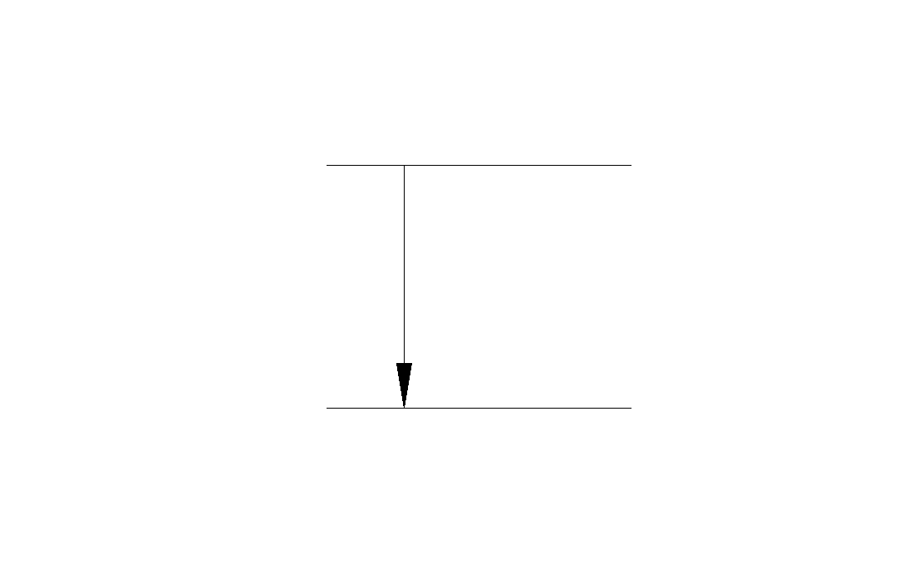
Per capire questo fenomeno è necessario studiare la Meccanica Quantistica Relativistica; comunque, per ora ci basta sapere due cose:To understand this phenomenon one must study Relativistic Quantum Mechanics; for now, however, it is enough to know two things:
primo, che quando un atomo riceve una certa energia da un sistema esterno e si porta in uno stato “eccitato”, cioè uno stato ad energia superiore, non rimane a lungo in questa condizione ma “decade” in uno stato di energia più bassa in un tempo brevissimo;first, that when an atom receives a certain amount of energy from an external system and moves into an “excited” state — that is, a state of higher energy — it does not remain long in this condition but “decays” to a lower-energy state in a very short time;
secondo, quando l’atomo decade in uno stato di energia inferiore, emette un fotone con energia pari alla differenza  .second, when the atom decays to a lower-energy state, it emits a photon whose energy equals the difference .
.second, when the atom decays to a lower-energy state, it emits a photon whose energy equals the difference .
In base alla relazione di Einstein  noi possiamo determinare l’energia di un fotone misurando la frequenza dell’onda elettromagnetica associata. Dunque, mettendo insieme questi fatti, abbiamo un metodo per determinare le differenze di energia tra i vari stati di un atomo.From Einstein’s relation we can determine the energy of a photon by measuring the frequency of the associated electromagnetic wave. Putting these facts together, then, we have a method for determining the energy differences between the various states of an atom.
noi possiamo determinare l’energia di un fotone misurando la frequenza dell’onda elettromagnetica associata. Dunque, mettendo insieme questi fatti, abbiamo un metodo per determinare le differenze di energia tra i vari stati di un atomo.From Einstein’s relation we can determine the energy of a photon by measuring the frequency of the associated electromagnetic wave. Putting these facts together, then, we have a method for determining the energy differences between the various states of an atom.
Descrizione di principio dell’esperimento.Principle of the experiment.
Si prende la sostanza che si vuole analizzare e la si porta allo stato gassoso; in questo modo abbiamo un insieme di atomi indipendenti tra di loro.The substance to be analysed is taken and brought to the gaseous state; in this way we obtain a set of atoms that are independent of one another.
Si fornisce energia a questi atomi in modo da “eccitarli”, cioè in modo da portarli ad uno stato energetico superiore.Energy is supplied to these atoms so as to “excite” them, that is, to raise them to a higher energy state.
Si raccoglie la luce emessa dagli atomi e si misurano le varie frequenze di cui è composta.The light emitted by the atoms is collected and the various frequencies of which it is composed are measured.
In base alla relazione di Einstein si derivano i vari dislivelli energetici dell’atomo sotto studio.From Einstein’s relation the various energy gaps of the atom under study are derived.
Per misurare le frequenze si può usare un reticolo di diffrazione che produce il primo massimo ad un angolo che dipende dalla frequenza della luce incidente:To measure the frequencies one can use a diffraction grating, which produces the first maximum at an angle that depends on the frequency of the incident light:

Se inviamo un fascio di luce prodotta dagli atomi verso un reticolo di diffrazione, al di là del reticolo abbiamo una separazione del fascio in varie parti monocromatiche. Ogni singola parte sarà deflessa con un angolo diverso; misurando gli angoli di diffrazione si determinano le frequenze di cui è composto il fascio.If we send a beam of the light produced by the atoms towards a diffraction grating, beyond the grating the beam is separated into several monochromatic parts. Each part is deflected by a different angle; by measuring the diffraction angles we determine the frequencies of which the beam is composed.
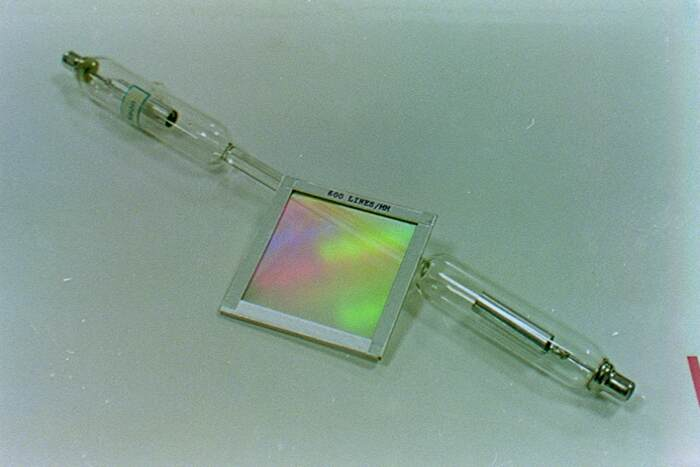
L’atomo più semplice che ha anche lo spettro più semplice è l’atomo di idrogeno. I livelli energetici previsti dalla teoria per l’atomo di idrogeno sono dati dalla formula e sono diagrammati nella figura 1; la figura 2 riporta tutti i possibili salti energetici tra un livello superiore ad uno inferiore (ovviamente i possibili salti energetici sono infiniti; noi ne abbiamo rappresentati solo alcuni).The simplest atom, which also has the simplest spectrum, is the hydrogen atom. The energy levels predicted by the theory for the hydrogen atom are given by the formula and are plotted in figure 1; figure 2 shows all the possible energy jumps from a higher level to a lower one (the possible energy jumps are of course infinite in number; we have shown only a few).
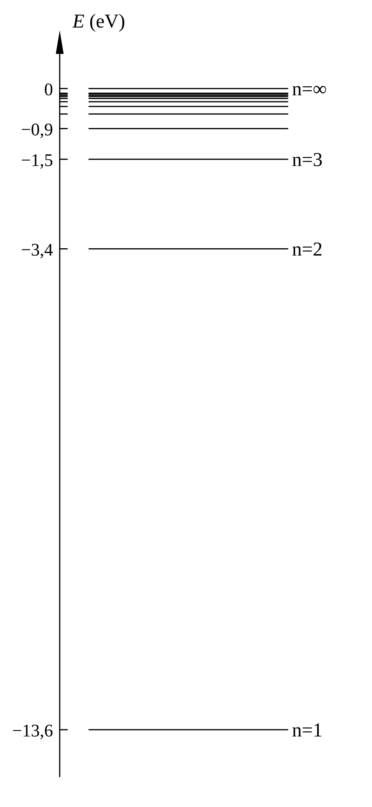
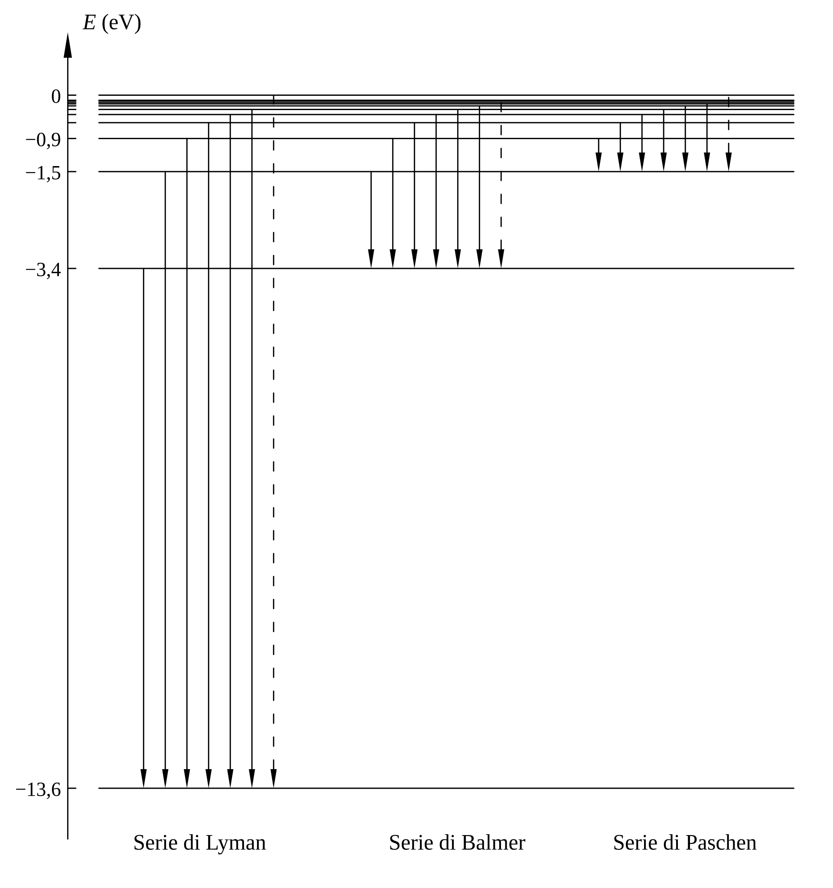
Si possono distinguere diverse serie di salti corrispondenti a diverse serie di lunghezze d’onda. La serie di Lyman si trova nell’ultravioletto; la serie di Balmer è stata la prima ad essere osservata e si trova nel visibile; la serie di Paschen si trova nell’infrarosso. Per osservare le serie di Lyman e di Paschen bisogna utilizzare dei particolari tipi di lastre fotografiche, mentre la serie di Balmer può essere osservata direttamente ad occhio.One can distinguish several series of jumps corresponding to several series of wavelengths. The Lyman series lies in the ultraviolet; the Balmer series — the first to be observed — lies in the visible; the Paschen series lies in the infrared. To observe the Lyman and Paschen series one must use particular kinds of photographic plates, whereas the Balmer series can be observed directly by eye.
Apparati sperimentali.Experimental apparatus.
Gli atomi che possono essere analizzati più facilmente sono quelli che formano un gas; infatti questi atomi si trovano già allo stato gassoso, ed inoltre è molto facile eccitarli. La foto di figura 3 mostra quattro tubicini di vetro nei quali ci sono quattro gas diversi, l’ossigeno, il neon, l’argon e l’azoto; ad una pressione di circa atmosfere. Agli estremi di questi tubicini ci sono due elettrodi; applicando una tensione di circa 1000 V a questi elettrodi si ottiene una scarica elettrica nel gas che è in grado di eccitare gli atomi.The atoms that can be analysed most easily are those forming a gas; indeed these atoms are already in the gaseous state and are, moreover, very easy to excite. The photograph in figure 3 shows four small glass tubes containing four different gases — oxygen, neon, argon and nitrogen — at a pressure of about atmospheres. At the ends of these tubes are two electrodes; applying a voltage of about 1000 V to these electrodes produces an electrical discharge in the gas capable of exciting the atoms.

La figura 4 mostra il tubo contenente neon acceso. La figura 5 mostra il banco ottico utilizzato per focalizzare il fascio di luce; abbiamo da sinistra verso destra: il tubo contenente neon, due lenti convergenti che focalizzano il fascio, un reticolo di diffrazione ed uno schermo bianco. La figura 6 mostra l’immagine ottenuta sullo schermo: sono visibili le righe relative ai diversi colori.Figure 4 shows the neon tube switched on. Figure 5 shows the optical bench used to focus the light beam; from left to right we have: the neon tube, two converging lenses that focus the beam, a diffraction grating and a white screen. Figure 6 shows the image obtained on the screen: the lines corresponding to the different colours are visible.
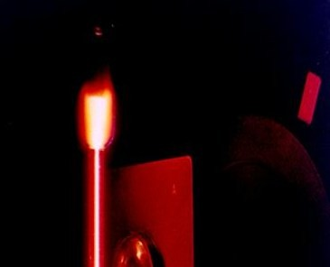
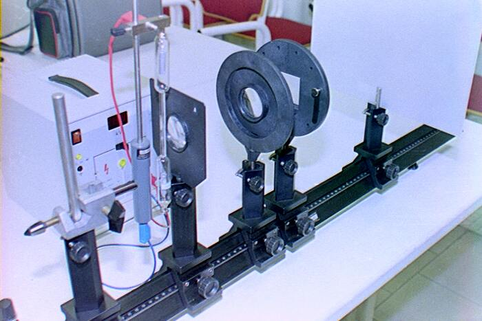
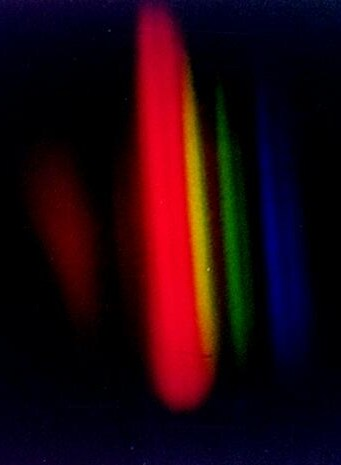
Oltre ai tubi di scarica, per eccitare gli atomi, si possono usare anche dei sistemi più efficienti; la figura 7 per esempio mostra una lampada ai vapori di mercurio che emette una luce molto più intensa di quella emessa dai tubi di scarica.Besides discharge tubes, more efficient systems can also be used to excite the atoms; figure 7, for example, shows a mercury-vapour lamp that emits a much more intense light than that emitted by the discharge tubes.

Le figure 8, 9 e 10 mostrano le immagini spettrali che si ottengono dalla lampada ai vapori di mercurio.Figures 8, 9 and 10 show the spectral images obtained from the mercury-vapour lamp.

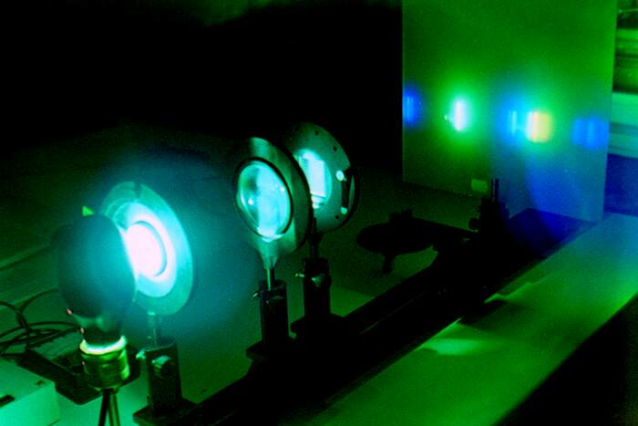
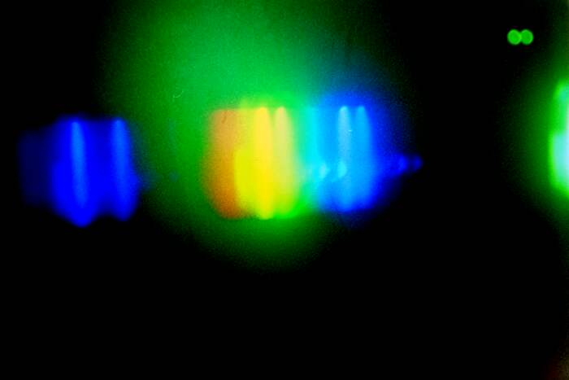
Per ottenere la luce emessa dall’idrogeno si usa una particolare lampada chiamata lampada di Balmer, rappresentata in figura 11.To obtain the light emitted by hydrogen a special lamp is used, called the Balmer lamp, shown in figure 11.
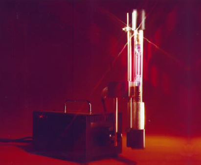
Per eseguire delle misure con un certo grado di precisione si deve usare un sistema ottico chiamato spettrometro a goniometro, rappresentato in figura 12. Le misure eseguite in questo modo sono in perfetto accordo con i risultati teorici ottenuti con l’equazione di Schrödinger.To carry out measurements with a certain degree of precision one must use an optical system called a goniometer spectrometer, shown in figure 12. The measurements made in this way are in perfect agreement with the theoretical results obtained from the Schrödinger equation.
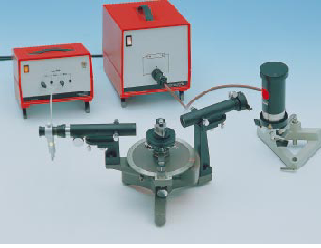